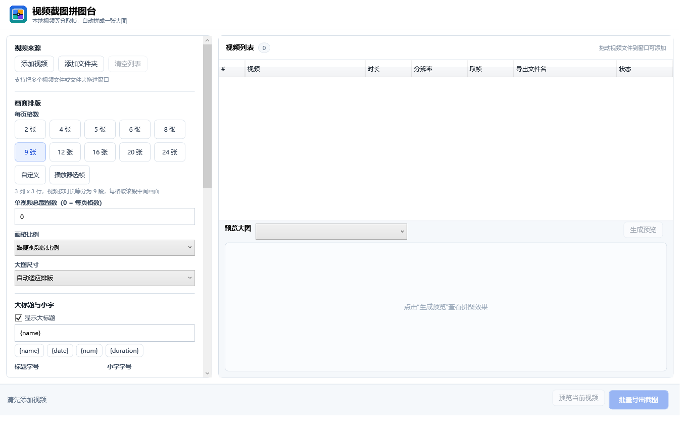
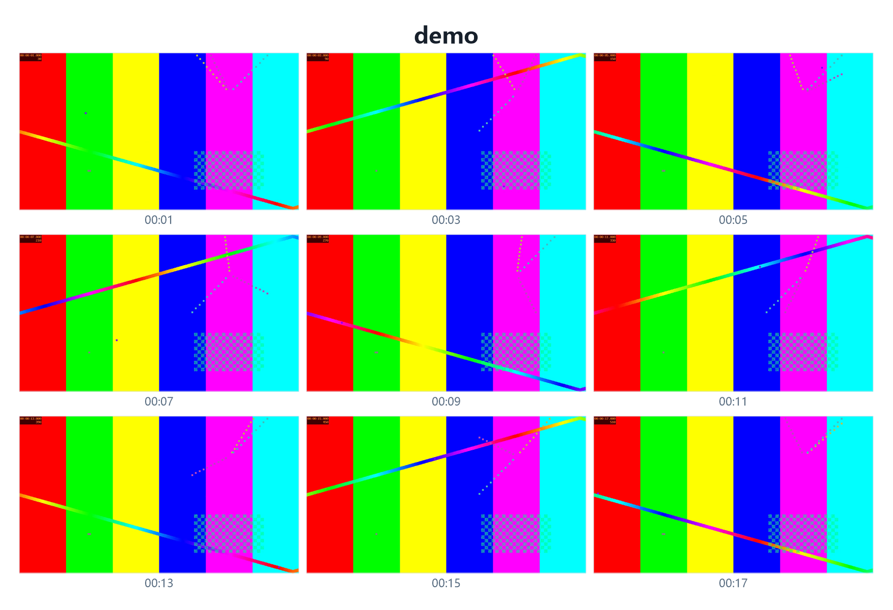

播放器选帧
播放、暂停、拖动进度条，把当前时间点加入截图列表。
Video Grid Studio · Windows x64
使用 LibVLC 播放器手动选帧，或按视频时长自动等分截图。 支持长视频快速跳转、单视频多页、多视频合并和 PDF 输出。

核心功能
播放、暂停、拖动进度条，把当前时间点加入截图列表。
按视频总时长等分，选择 2 到 120 张，每格显示对应时间。
关键帧附近快速跳转，不再从视频开头一路解码到结尾。
截图数超过每页容量时自动分页，并按页码继续命名。
单个视频分别生成 PDF、全部合并 PDF，或两种同时生成。
自动、1080P、2K、4K、8K、16K、A3 和 A4 横竖版。
实际输出
每页格数与单视频截图数分开设置。多视频可以选择分别导出、 按顺序合并，或者同时输出两套结果。

快捷键
标准安装包，支持自定义目录、桌面快捷方式和卸载程序。